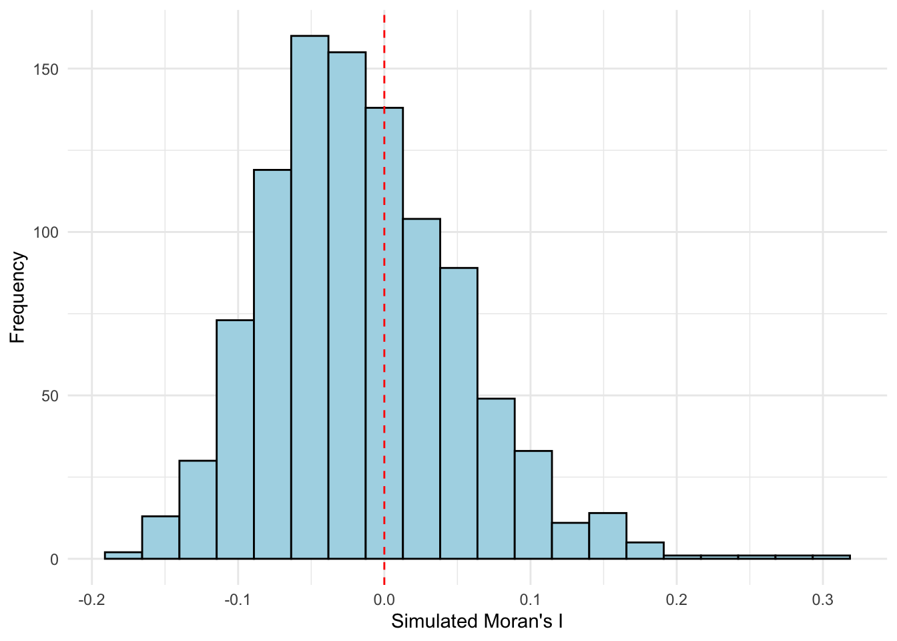
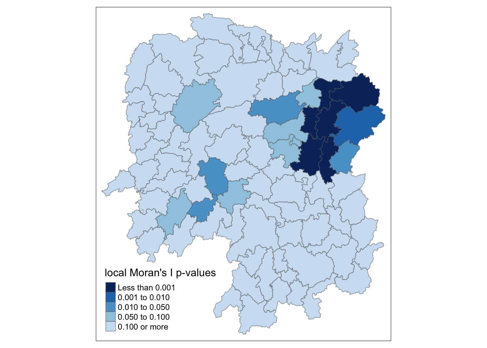
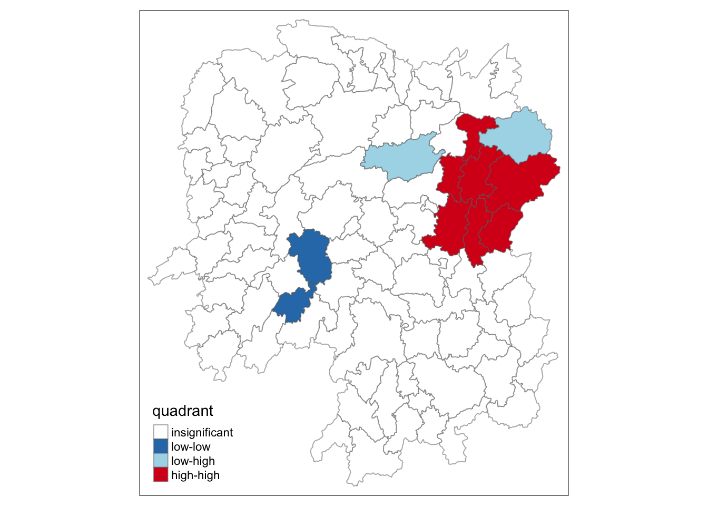
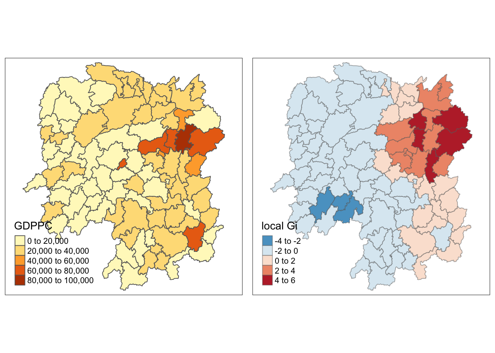

pacman::p_load(sf, spdep, tmap, tidyverse)Hands on Exercise 5
9 Global Measures of Spatial Autocorrelation
Loading the packages
Importing the Data
hunan <- st_read(dsn = "data/geospatial",
layer = "Hunan")Reading layer `Hunan' from data source
`/Users/seesarhlakyi/Desktop/ssrhk/ISSS626-GAA/Hands-on_Ex/Hands-on_Ex05/data/geospatial'
using driver `ESRI Shapefile'
Simple feature collection with 88 features and 7 fields
Geometry type: POLYGON
Dimension: XY
Bounding box: xmin: 108.7831 ymin: 24.6342 xmax: 114.2544 ymax: 30.12812
Geodetic CRS: WGS 84hunan2012 <- read_csv("data/aspatial/Hunan_2012.csv")Rows: 88 Columns: 29
── Column specification ────────────────────────────────────────────────────────
Delimiter: ","
chr (2): County, City
dbl (27): avg_wage, deposite, FAI, Gov_Rev, Gov_Exp, GDP, GDPPC, GIO, Loan, ...
ℹ Use `spec()` to retrieve the full column specification for this data.
ℹ Specify the column types or set `show_col_types = FALSE` to quiet this message.Performing Relational Join
hunan <- left_join(hunan,hunan2012) %>% select(1:4, 7, 15)Joining with `by = join_by(County)`Visualising Regional Development Indicator
equal <- tm_shape(hunan) +
tm_fill("GDPPC",
n = 5,
style = "equal") +
tm_borders(alpha = 0.5) +
tm_layout(main.title = "Equal interval classification")
quantile <- tm_shape(hunan) +
tm_fill("GDPPC",
n = 5,
style = "quantile") +
tm_borders(alpha = 0.5) +
tm_layout(main.title = "Equal quantile classification")
tmap_arrange(equal,
quantile,
asp=1,
ncol=2)
Global Measures of Spatial Autocorrelation
Computing Contiguity Spatial Weights
This function builds a neighbours list based on regions with contiguous boundaries. If you look at the documentation you will see that you can pass a “queen” argument that takes TRUE or FALSE as options. If you do not specify this argument the default is set to TRUE, that is, if you don’t specify queen = FALSE this function will return a list of first order neighbours using the Queen criteria.
wm_q <- poly2nb(hunan,
queen=TRUE)
summary(wm_q)Neighbour list object:
Number of regions: 88
Number of nonzero links: 448
Percentage nonzero weights: 5.785124
Average number of links: 5.090909
Link number distribution:
1 2 3 4 5 6 7 8 9 11
2 2 12 16 24 14 11 4 2 1
2 least connected regions:
30 65 with 1 link
1 most connected region:
85 with 11 linksThe summary report above shows that there are 88 area units in Hunan. The most connected area unit has 11 neighbours. There are two area units with only one neighbours.
Row-standardised weights matrix
Assign weights to each neighboring polygon. In our case, each neighboring polygon will be assigned equal weight (style=“W”). This is accomplished by assigning the fraction 1/(#ofneighbors) to each neighboring county then summing the weighted income values.
rswm_q <- nb2listw(wm_q,
style="W",
zero.policy = TRUE)
rswm_qCharacteristics of weights list object:
Neighbour list object:
Number of regions: 88
Number of nonzero links: 448
Percentage nonzero weights: 5.785124
Average number of links: 5.090909
Weights style: W
Weights constants summary:
n nn S0 S1 S2
W 88 7744 88 37.86334 365.9147Global Measures of Spatial Autocorrelation: Moran’s I
Maron’s I test
moran.test(hunan$GDPPC,
listw=rswm_q,
zero.policy = TRUE,
na.action=na.omit)
Moran I test under randomisation
data: hunan$GDPPC
weights: rswm_q
Moran I statistic standard deviate = 4.7351, p-value = 1.095e-06
alternative hypothesis: greater
sample estimates:
Moran I statistic Expectation Variance
0.300749970 -0.011494253 0.004348351 Statistical conclusion:
Moran’s I statistic: The value is 0.3007, which is positive. A value closer to +1 indicates a strong positive spatial autocorrelation, meaning similar values (in this case, GDP per capita) tend to be clustered geographically. A value closer to -1 would indicate negative spatial autocorrelation (i.e., neighboring areas have dissimilar values), and a value around 0 indicates randomness.
Standard deviate (z-score): The value is 4.7351, which is quite high. This measures how extreme the observed Moran’s I value is relative to what would be expected under random conditions. A high z-score means that the observed clustering is highly unlikely to have occurred by chance.
P-value: The p-value is 1.095e-06, which is extremely small (well below the common significance threshold of 0.05). This suggests that we can reject the null hypothesis of no spatial autocorrelation.
Conclusion: There is statistically significant evidence of positive spatial autocorrelation for GDP per capita in Hunan. This means that areas with high (or low) GDP per capita tend to be located near other areas with similarly high (or low) values, indicating the presence of spatial clustering of economic development.
Computing Monte Carlo Moran’s I
set.seed(1234)
bperm= moran.mc(hunan$GDPPC,
listw=rswm_q,
nsim=999,
zero.policy = TRUE,
na.action=na.omit)
bperm
Monte-Carlo simulation of Moran I
data: hunan$GDPPC
weights: rswm_q
number of simulations + 1: 1000
statistic = 0.30075, observed rank = 1000, p-value = 0.001
alternative hypothesis: greaterStatistical conclusion:
Statistic = 0.30075: This is the observed Moran’s I statistic, which is consistent with the result you previously obtained. It shows positive spatial autocorrelation, meaning there is clustering of similar values (high or low GDP per capita) in Hunan Province.
Observed rank = 1000: In the Monte Carlo simulation, 1000 random permutations of the GDP per capita data were generated, and the Moran’s I value was recalculated for each permutation. The “observed rank” of 1000 means that the actual observed Moran’s I value (0.30075) was higher than all the Moran’s I values generated from the random permutations, which strongly suggests that the observed spatial pattern is not due to chance.
P-value = 0.001: This indicates that only 1 out of 1000 random spatial configurations produced a Moran’s I value as extreme as the observed one. Since the p-value is very small (below 0.05), it strongly rejects the null hypothesis of no spatial autocorrelation. Thus, the observed spatial clustering is statistically significant.
Conclusion: The Monte Carlo simulation confirms that the observed spatial autocorrelation of GDP per capita in Hunan is highly unlikely to have occurred by random chance. This reinforces the earlier conclusion of significant clustering in the spatial distribution of GDP per capita across the region.
Visualising Monte Carlo Moran’s I
mean(bperm$res[1:999])[1] -0.01504572var(bperm$res[1:999])[1] 0.004371574summary(bperm$res[1:999]) Min. 1st Qu. Median Mean 3rd Qu. Max.
-0.18339 -0.06168 -0.02125 -0.01505 0.02611 0.27593 hist(bperm$res,
freq=TRUE,
breaks=20,
xlab="Simulated Moran's I")
abline(v=0,
col="red") 
Plotting using ggplot2 package
ggplot(data.frame(x = bperm$res), aes(x = x)) +
geom_histogram(bins = 20, color = "black", fill = "lightblue") +
geom_vline(xintercept = 0, color = "red", linetype = "dashed") +
labs(x = "Simulated Moran's I", y = "Frequency") +
theme_minimal()
Statistical conclusion:
- The majority of simulated Moran’s I values cluster around 0, which suggests that random distributions typically produce values near 0 (i.e., no spatial autocorrelation).
- The observed Moran’s I (red line) is located around 0. Its position on the right-hand side of the distribution shows that the observed value is higher than most of the simulated Moran’s I values, implying that the observed spatial autocorrelation is significantly stronger than what would be expected under random conditions.
- The result reinforces the conclusion from the earlier p-value of 0.001: the observed spatial autocorrelation (clustering of GDP per capita in Hunan) is statistically significant and unlikely to have occurred by chance.
Global Measures of Spatial Autocorrelation: Geary’s C
Geary’s C test
geary.test(hunan$GDPPC, listw=rswm_q)
Geary C test under randomisation
data: hunan$GDPPC
weights: rswm_q
Geary C statistic standard deviate = 3.6108, p-value = 0.0001526
alternative hypothesis: Expectation greater than statistic
sample estimates:
Geary C statistic Expectation Variance
0.6907223 1.0000000 0.0073364 Statistical conclusion:
Geary C statistic = 0.6907:
- Geary’s C values range between 0 and 2. A value of 1 indicates no spatial autocorrelation (random distribution).
- Values less than 1 (like 0.6907) indicate positive spatial autocorrelation, meaning neighboring areas tend to have similar GDP per capita values (either high or low).
- Values greater than 1 would suggest negative spatial autocorrelation (neighboring areas are dissimilar).
Standard deviate = 3.6108: This z-score is high, indicating that the observed Geary’s C is significantly different from what would be expected under a null hypothesis of spatial randomness.
P-value = 0.0001526: This small p-value indicates strong evidence against the null hypothesis of no spatial autocorrelation. The spatial clustering observed is highly unlikely to have occurred by chance.
Expectation = 1: This is the expected value of Geary’s C under spatial randomness.
Variance = 0.0073364: This is the variance of the Geary’s C statistic, which helps determine the significance of the observed value relative to the expected value.
Conclusion: The Geary’s C statistic of 0.6907 indicates positive spatial autocorrelation for GDP per capita in Hunan Province, meaning neighboring counties tend to have similar values. The small p-value (0.0001526) shows this clustering is statistically significant, reinforcing the results from the Moran’s I test that suggest strong spatial clustering of development in the province.
Computing Monte Carlo Geary’s C
set.seed(1234)
bperm=geary.mc(hunan$GDPPC,
listw=rswm_q,
nsim=999)
bperm
Monte-Carlo simulation of Geary C
data: hunan$GDPPC
weights: rswm_q
number of simulations + 1: 1000
statistic = 0.69072, observed rank = 1, p-value = 0.001
alternative hypothesis: greaterStatistical conclusion:
- Statistic (Geary’s C) = 0.69072:
- This value indicates positive spatial autocorrelation, meaning neighboring regions tend to have similar GDP per capita values. Geary’s C values range between 0 and 2, with values less than 1 indicating positive spatial autocorrelation (similar values tend to cluster together), while values greater than 1 indicate negative spatial autocorrelation (neighboring values tend to differ).
- In this case, the value of 0.69072 suggests that regions with similar GDP per capita are spatially clustered together in Hunan.
- Observed rank = 1:
- This means that the observed Geary’s C value is the lowest (most extreme) in comparison to the 1000 simulations, where the null hypothesis of spatial randomness was assumed. This suggests that the observed pattern is highly unlikely under random conditions.
- p-value = 0.001:
- The p-value indicates the probability of observing such extreme spatial autocorrelation (or stronger) by chance. Since the p-value is very low (0.001), it suggests that the observed spatial autocorrelation is statistically significant and highly unlikely to occur if the GDP per capita values were distributed randomly across the region.
- The small p-value allows us to reject the null hypothesis of spatial randomness and conclude that there is significant spatial clustering of GDP per capita in Hunan.
- Conclusion: The Monte Carlo simulation reinforces the interpretation that there is significant positive spatial autocorrelation in GDP per capita across Hunan. Neighboring regions tend to have similar GDP per capita values, and this clustering is highly unlikely to be the result of random chance. This suggests that GDP per capita is spatially dependent and that certain areas exhibit higher or lower economic performance in clusters.
Visualising the Monte Carlo Geary’s C
mean(bperm$res[1:999])[1] 1.004402var(bperm$res[1:999])[1] 0.007436493summary(bperm$res[1:999]) Min. 1st Qu. Median Mean 3rd Qu. Max.
0.7142 0.9502 1.0052 1.0044 1.0595 1.2722 hist(bperm$res, freq=TRUE, breaks=20, xlab="Simulated Geary c")
abline(v=1, col="red") 
Statistical observation:
- The majority of simulated Geary’s C values are centered around 1, indicating that random distributions would typically produce values close to this.
- The observed Geary’s C value (0.69) lies to the left of the simulated values, indicating positive spatial autocorrelation(neighboring areas are similar in GDP per capita).
- The location of the observed value reinforces the earlier conclusion that the observed clustering of GDP per capita is statistically significant and unlikely to occur by chance, confirming that neighboring regions tend to have similar levels of development.
This provides strong evidence for spatial clustering of GDP per capita in Hunan.
Spatial Correlogram
Compute Moran’s I correlogram
MI_corr <- sp.correlogram(wm_q,
hunan$GDPPC,
order=6,
method="I",
style="W")
plot(MI_corr)
print(MI_corr)Spatial correlogram for hunan$GDPPC
method: Moran's I
estimate expectation variance standard deviate Pr(I) two sided
1 (88) 0.3007500 -0.0114943 0.0043484 4.7351 2.189e-06 ***
2 (88) 0.2060084 -0.0114943 0.0020962 4.7505 2.029e-06 ***
3 (88) 0.0668273 -0.0114943 0.0014602 2.0496 0.040400 *
4 (88) 0.0299470 -0.0114943 0.0011717 1.2107 0.226015
5 (88) -0.1530471 -0.0114943 0.0012440 -4.0134 5.984e-05 ***
6 (88) -0.1187070 -0.0114943 0.0016791 -2.6164 0.008886 **
---
Signif. codes: 0 '***' 0.001 '**' 0.01 '*' 0.05 '.' 0.1 ' ' 1Compute Geary’s C correlogram and plot
GC_corr <- sp.correlogram(wm_q,
hunan$GDPPC,
order=6,
method="C",
style="W")
plot(GC_corr)
print(GC_corr)Spatial correlogram for hunan$GDPPC
method: Geary's C
estimate expectation variance standard deviate Pr(I) two sided
1 (88) 0.6907223 1.0000000 0.0073364 -3.6108 0.0003052 ***
2 (88) 0.7630197 1.0000000 0.0049126 -3.3811 0.0007220 ***
3 (88) 0.9397299 1.0000000 0.0049005 -0.8610 0.3892612
4 (88) 1.0098462 1.0000000 0.0039631 0.1564 0.8757128
5 (88) 1.2008204 1.0000000 0.0035568 3.3673 0.0007592 ***
6 (88) 1.0773386 1.0000000 0.0058042 1.0151 0.3100407
---
Signif. codes: 0 '***' 0.001 '**' 0.01 '*' 0.05 '.' 0.1 ' ' 1Statistical Observations:
1. Moran’s I Spatial Correlogram
Interpretation of Lags:
- Lag 1 (0.3007, p < 0.001) shows strong positive spatial autocorrelation, meaning nearby regions have similar GDP per capita values.
- Lag 2 (0.2060, p < 0.001) still shows positive spatial autocorrelation but weaker than lag 1.
- Lag 3 (0.0668, p < 0.05) indicates a weaker but still significant positive spatial autocorrelation.
- Lag 4 (0.0299, p = 0.23) shows no significant spatial autocorrelation.
- Lag 5 (-0.1530, p < 0.001) shows negative spatial autocorrelation, meaning regions at this distance tend to have dissimilar GDP per capita.
- Lag 6 (-0.1187, p < 0.01) also shows negative spatial autocorrelation.
Conclusion:
- At close distances (lags 1-3), there is positive spatial autocorrelation, meaning nearby counties tend to have similar GDP per capita.
- At farther distances (lags 5-6), the spatial autocorrelation becomes negative, indicating that regions further apart tend to have contrasting GDP per capita levels.
2. Geary’s C Spatial Correlogram
Interpretation of Lags:
- Lag 1 (0.6907, p < 0.001) indicates strong positive spatial autocorrelation, consistent with Moran’s I at lag 1.
- Lag 2 (0.7630, p < 0.001) also shows positive spatial autocorrelation.
- Lag 3 (0.9397, p = 0.39) shows no significant autocorrelation, as it is close to 1.
- Lag 4 (1.0098, p = 0.88) indicates no significant spatial autocorrelation.
- Lag 5 (1.2008, p < 0.001) shows negative spatial autocorrelation, meaning that regions at this distance are dissimilar in terms of GDP per capita.
- Lag 6 (1.0773, p = 0.31) shows no significant spatial autocorrelation.
Conclusion:
- For Geary’s C, lags 1 and 2 show positive spatial autocorrelation, while lag 5 shows negative spatial autocorrelation.
- The results align with Moran’s I, especially regarding positive autocorrelation at close distances and negative autocorrelation at further distances.
10 Local Measures of Spatial Autocorrelation
Local Indicators of Spatial Association(LISA)
Computing Contiguity Spatial Weights
wm_q <- poly2nb(hunan,
queen=TRUE)
summary(wm_q)Neighbour list object:
Number of regions: 88
Number of nonzero links: 448
Percentage nonzero weights: 5.785124
Average number of links: 5.090909
Link number distribution:
1 2 3 4 5 6 7 8 9 11
2 2 12 16 24 14 11 4 2 1
2 least connected regions:
30 65 with 1 link
1 most connected region:
85 with 11 linksRow-standardised weights matrix
rswm_q <- nb2listw(wm_q,
style="W",
zero.policy = TRUE)
rswm_qCharacteristics of weights list object:
Neighbour list object:
Number of regions: 88
Number of nonzero links: 448
Percentage nonzero weights: 5.785124
Average number of links: 5.090909
Weights style: W
Weights constants summary:
n nn S0 S1 S2
W 88 7744 88 37.86334 365.9147Computing local Moran’s I
fips <- order(hunan$County)
localMI <- localmoran(hunan$GDPPC, rswm_q)
head(localMI) Ii E.Ii Var.Ii Z.Ii Pr(z != E(Ii))
1 -0.001468468 -2.815006e-05 4.723841e-04 -0.06626904 0.9471636
2 0.025878173 -6.061953e-04 1.016664e-02 0.26266425 0.7928094
3 -0.011987646 -5.366648e-03 1.133362e-01 -0.01966705 0.9843090
4 0.001022468 -2.404783e-07 5.105969e-06 0.45259801 0.6508382
5 0.014814881 -6.829362e-05 1.449949e-03 0.39085814 0.6959021
6 -0.038793829 -3.860263e-04 6.475559e-03 -0.47728835 0.6331568localmoran() function returns a matrix of values whose columns are:
Ii: the local Moran’s I statistics
E.Ii: the expectation of local moran statistic under the randomisation hypothesis
Var.Ii: the variance of local moran statistic under the randomisation hypothesis
Z.Ii:the standard deviate of local moran statistic
Pr(): the p-value of local moran statistic
printCoefmat(data.frame(
localMI[fips,],
row.names=hunan$County[fips]),
check.names=FALSE) Ii E.Ii Var.Ii Z.Ii Pr.z....E.Ii..
Anhua -2.2493e-02 -5.0048e-03 5.8235e-02 -7.2467e-02 0.9422
Anren -3.9932e-01 -7.0111e-03 7.0348e-02 -1.4791e+00 0.1391
Anxiang -1.4685e-03 -2.8150e-05 4.7238e-04 -6.6269e-02 0.9472
Baojing 3.4737e-01 -5.0089e-03 8.3636e-02 1.2185e+00 0.2230
Chaling 2.0559e-02 -9.6812e-04 2.7711e-02 1.2932e-01 0.8971
Changning -2.9868e-05 -9.0010e-09 1.5105e-07 -7.6828e-02 0.9388
Changsha 4.9022e+00 -2.1348e-01 2.3194e+00 3.3590e+00 0.0008
Chengbu 7.3725e-01 -1.0534e-02 2.2132e-01 1.5895e+00 0.1119
Chenxi 1.4544e-01 -2.8156e-03 4.7116e-02 6.8299e-01 0.4946
Cili 7.3176e-02 -1.6747e-03 4.7902e-02 3.4200e-01 0.7324
Dao 2.1420e-01 -2.0824e-03 4.4123e-02 1.0297e+00 0.3032
Dongan 1.5210e-01 -6.3485e-04 1.3471e-02 1.3159e+00 0.1882
Dongkou 5.2918e-01 -6.4461e-03 1.0748e-01 1.6338e+00 0.1023
Fenghuang 1.8013e-01 -6.2832e-03 1.3257e-01 5.1198e-01 0.6087
Guidong -5.9160e-01 -1.3086e-02 3.7003e-01 -9.5104e-01 0.3416
Guiyang 1.8240e-01 -3.6908e-03 3.2610e-02 1.0305e+00 0.3028
Guzhang 2.8466e-01 -8.5054e-03 1.4152e-01 7.7931e-01 0.4358
Hanshou 2.5878e-02 -6.0620e-04 1.0167e-02 2.6266e-01 0.7928
Hengdong 9.9964e-03 -4.9063e-04 6.7742e-03 1.2742e-01 0.8986
Hengnan 2.8064e-02 -3.2160e-04 3.7597e-03 4.6294e-01 0.6434
Hengshan -5.8201e-03 -3.0437e-05 5.1076e-04 -2.5618e-01 0.7978
Hengyang 6.2997e-02 -1.3046e-03 2.1865e-02 4.3486e-01 0.6637
Hongjiang 1.8790e-01 -2.3019e-03 3.1725e-02 1.0678e+00 0.2856
Huarong -1.5389e-02 -1.8667e-03 8.1030e-02 -4.7503e-02 0.9621
Huayuan 8.3772e-02 -8.5569e-04 2.4495e-02 5.4072e-01 0.5887
Huitong 2.5997e-01 -5.2447e-03 1.1077e-01 7.9685e-01 0.4255
Jiahe -1.2431e-01 -3.0550e-03 5.1111e-02 -5.3633e-01 0.5917
Jianghua 2.8651e-01 -3.8280e-03 8.0968e-02 1.0204e+00 0.3076
Jiangyong 2.4337e-01 -2.7082e-03 1.1746e-01 7.1800e-01 0.4728
Jingzhou 1.8270e-01 -8.5106e-04 2.4363e-02 1.1759e+00 0.2396
Jinshi -1.1988e-02 -5.3666e-03 1.1334e-01 -1.9667e-02 0.9843
Jishou -2.8680e-01 -2.6305e-03 4.4028e-02 -1.3543e+00 0.1756
Lanshan 6.3334e-02 -9.6365e-04 2.0441e-02 4.4972e-01 0.6529
Leiyang 1.1581e-02 -1.4948e-04 2.5082e-03 2.3422e-01 0.8148
Lengshuijiang -1.7903e+00 -8.2129e-02 2.1598e+00 -1.1623e+00 0.2451
Li 1.0225e-03 -2.4048e-07 5.1060e-06 4.5260e-01 0.6508
Lianyuan -1.4672e-01 -1.8983e-03 1.9145e-02 -1.0467e+00 0.2952
Liling 1.3774e+00 -1.5097e-02 4.2601e-01 2.1335e+00 0.0329
Linli 1.4815e-02 -6.8294e-05 1.4499e-03 3.9086e-01 0.6959
Linwu -2.4621e-03 -9.0703e-06 1.9258e-04 -1.7676e-01 0.8597
Linxiang 6.5904e-02 -2.9028e-03 2.5470e-01 1.3634e-01 0.8916
Liuyang 3.3688e+00 -7.7502e-02 1.5180e+00 2.7972e+00 0.0052
Longhui 8.0801e-01 -1.1377e-02 1.5538e-01 2.0787e+00 0.0376
Longshan 7.5663e-01 -1.1100e-02 3.1449e-01 1.3690e+00 0.1710
Luxi 1.8177e-01 -2.4855e-03 3.4249e-02 9.9561e-01 0.3194
Mayang 2.1852e-01 -5.8773e-03 9.8049e-02 7.1663e-01 0.4736
Miluo 1.8704e+00 -1.6927e-02 2.7925e-01 3.5715e+00 0.0004
Nan -9.5789e-03 -4.9497e-04 6.8341e-03 -1.0988e-01 0.9125
Ningxiang 1.5607e+00 -7.3878e-02 8.0012e-01 1.8274e+00 0.0676
Ningyuan 2.0910e-01 -7.0884e-03 8.2306e-02 7.5356e-01 0.4511
Pingjiang -9.8964e-01 -2.6457e-03 5.6027e-02 -4.1698e+00 0.0000
Qidong 1.1806e-01 -2.1207e-03 2.4747e-02 7.6396e-01 0.4449
Qiyang 6.1966e-02 -7.3374e-04 8.5743e-03 6.7712e-01 0.4983
Rucheng -3.6992e-01 -8.8999e-03 2.5272e-01 -7.1814e-01 0.4727
Sangzhi 2.5053e-01 -4.9470e-03 6.8000e-02 9.7972e-01 0.3272
Shaodong -3.2659e-02 -3.6592e-05 5.0546e-04 -1.4510e+00 0.1468
Shaoshan 2.1223e+00 -5.0227e-02 1.3668e+00 1.8583e+00 0.0631
Shaoyang 5.9499e-01 -1.1253e-02 1.3012e-01 1.6807e+00 0.0928
Shimen -3.8794e-02 -3.8603e-04 6.4756e-03 -4.7729e-01 0.6332
Shuangfeng 9.2835e-03 -2.2867e-03 3.1516e-02 6.5174e-02 0.9480
Shuangpai 8.0591e-02 -3.1366e-04 8.9838e-03 8.5358e-01 0.3933
Suining 3.7585e-01 -3.5933e-03 4.1870e-02 1.8544e+00 0.0637
Taojiang -2.5394e-01 -1.2395e-03 1.4477e-02 -2.1002e+00 0.0357
Taoyuan 1.4729e-02 -1.2039e-04 8.5103e-04 5.0903e-01 0.6107
Tongdao 4.6482e-01 -6.9870e-03 1.9879e-01 1.0582e+00 0.2900
Wangcheng 4.4220e+00 -1.1067e-01 1.3596e+00 3.8873e+00 0.0001
Wugang 7.1003e-01 -7.8144e-03 1.0710e-01 2.1935e+00 0.0283
Xiangtan 2.4530e-01 -3.6457e-04 3.2319e-03 4.3213e+00 0.0000
Xiangxiang 2.6271e-01 -1.2703e-03 2.1290e-02 1.8092e+00 0.0704
Xiangyin 5.4525e-01 -4.7442e-03 7.9236e-02 1.9539e+00 0.0507
Xinhua 1.1810e-01 -6.2649e-03 8.6001e-02 4.2409e-01 0.6715
Xinhuang 1.5725e-01 -4.1820e-03 3.6648e-01 2.6667e-01 0.7897
Xinning 6.8928e-01 -9.6674e-03 2.0328e-01 1.5502e+00 0.1211
Xinshao 5.7578e-02 -8.5932e-03 1.1769e-01 1.9289e-01 0.8470
Xintian -7.4050e-03 -5.1493e-03 1.0877e-01 -6.8395e-03 0.9945
Xupu 3.2406e-01 -5.7468e-03 5.7735e-02 1.3726e+00 0.1699
Yanling -6.9021e-02 -5.9211e-04 9.9306e-03 -6.8667e-01 0.4923
Yizhang -2.6844e-01 -2.2463e-03 4.7588e-02 -1.2202e+00 0.2224
Yongshun 6.3064e-01 -1.1350e-02 1.8830e-01 1.4795e+00 0.1390
Yongxing 4.3411e-01 -9.0735e-03 1.5088e-01 1.1409e+00 0.2539
You 7.8750e-02 -7.2728e-03 1.2116e-01 2.4714e-01 0.8048
Yuanjiang 2.0004e-04 -1.7760e-04 2.9798e-03 6.9181e-03 0.9945
Yuanling 8.7298e-03 -2.2981e-06 2.3221e-05 1.8121e+00 0.0700
Yueyang 4.1189e-02 -1.9768e-04 2.3113e-03 8.6085e-01 0.3893
Zhijiang 1.0476e-01 -7.8123e-04 1.3100e-02 9.2214e-01 0.3565
Zhongfang -2.2685e-01 -2.1455e-03 3.5927e-02 -1.1855e+00 0.2358
Zhuzhou 3.2864e-01 -5.2432e-04 7.2391e-03 3.8688e+00 0.0001
Zixing -7.6849e-01 -8.8210e-02 9.4057e-01 -7.0144e-01 0.4830Mapping the local Moran’s I
Before mapping the local Moran’s I map, it is wise to append the local Moran’s I dataframe (i.e. localMI) onto hunan SpatialPolygonDataFrame.
hunan.localMI <- cbind(hunan,localMI) %>%
rename(Pr.Ii = Pr.z....E.Ii..)Mapping local Moran’s I values
tm_shape(hunan.localMI) +
tm_fill(col = "Ii",
style = "pretty",
palette = "RdBu",
title = "local moran statistics") +
tm_borders(alpha = 0.5)Variable(s) "Ii" contains positive and negative values, so midpoint is set to 0. Set midpoint = NA to show the full spectrum of the color palette.
Mapping local Moran’s I p-values
tm_shape(hunan.localMI) +
tm_fill(col = "Pr.Ii",
breaks=c(-Inf, 0.001, 0.01, 0.05, 0.1, Inf),
palette="-Blues",
title = "local Moran's I p-values") +
tm_borders(alpha = 0.5)
Mapping both local Moran’s I values and p-values
localMI.map <- tm_shape(hunan.localMI) +
tm_fill(col = "Ii",
style = "pretty",
title = "local moran statistics") +
tm_borders(alpha = 0.5)
pvalue.map <- tm_shape(hunan.localMI) +
tm_fill(col = "Pr.Ii",
breaks=c(-Inf, 0.001, 0.01, 0.05, 0.1, Inf),
palette="-Blues",
title = "local Moran's I p-values") +
tm_borders(alpha = 0.5)
tmap_arrange(localMI.map, pvalue.map, asp=1, ncol=2)Variable(s) "Ii" contains positive and negative values, so midpoint is set to 0. Set midpoint = NA to show the full spectrum of the color palette.
Creating a LISA Cluster Map
Plotting Moran scatterplot
nci <- moran.plot(hunan$GDPPC, rswm_q,
labels=as.character(hunan$County),
xlab="GDPPC 2012",
ylab="Spatially Lag GDPPC 2012")
Notice that the plot is split in 4 quadrants. The top right corner belongs to areas that have high GDPPC and are surrounded by other areas that have the average level of GDPPC. This are the high-high locations in the lesson slide.
Plotting Moran scatterplot with standardised variable
First we will use scale() to centers and scales the variable. Here centering is done by subtracting the mean (omitting NAs) the corresponding columns, and scaling is done by dividing the (centered) variable by their standard deviations.
hunan$Z.GDPPC <- scale(hunan$GDPPC) %>%
as.vector nci2 <- moran.plot(hunan$Z.GDPPC, rswm_q,
labels=as.character(hunan$County),
xlab="z-GDPPC 2012",
ylab="Spatially Lag z-GDPPC 2012")
Preparing LISA map classes
quadrant <- vector(mode="numeric",length=nrow(localMI))hunan$lag_GDPPC <- lag.listw(rswm_q, hunan$GDPPC)
DV <- hunan$lag_GDPPC - mean(hunan$lag_GDPPC) LM_I <- localMI[,1] - mean(localMI[,1]) signif <- 0.05 These four command lines define the low-low (1), low-high (2), high-low (3) and high-high (4) categories.
quadrant[DV <0 & LM_I>0] <- 1
quadrant[DV >0 & LM_I<0] <- 2
quadrant[DV <0 & LM_I<0] <- 3
quadrant[DV >0 & LM_I>0] <- 4 Place non-significant Moran in the category 0.
quadrant[localMI[,5]>signif] <- 0quadrant <- vector(mode="numeric",length=nrow(localMI))
hunan$lag_GDPPC <- lag.listw(rswm_q, hunan$GDPPC)
DV <- hunan$lag_GDPPC - mean(hunan$lag_GDPPC)
LM_I <- localMI[,1]
signif <- 0.05
quadrant[DV <0 & LM_I>0] <- 1
quadrant[DV >0 & LM_I<0] <- 2
quadrant[DV <0 & LM_I<0] <- 3
quadrant[DV >0 & LM_I>0] <- 4
quadrant[localMI[,5]>signif] <- 0Plotting LISA map
hunan.localMI$quadrant <- quadrant
colors <- c("#ffffff", "#2c7bb6", "#abd9e9", "#fdae61", "#d7191c")
clusters <- c("insignificant", "low-low", "low-high", "high-low", "high-high")
tm_shape(hunan.localMI) +
tm_fill(col = "quadrant",
style = "cat",
palette = colors[c(sort(unique(quadrant)))+1],
labels = clusters[c(sort(unique(quadrant)))+1],
popup.vars = c("")) +
tm_view(set.zoom.limits = c(11,17)) +
tm_borders(alpha=0.5)
gdppc <- qtm(hunan, "GDPPC")
hunan.localMI$quadrant <- quadrant
colors <- c("#ffffff", "#2c7bb6", "#abd9e9", "#fdae61", "#d7191c")
clusters <- c("insignificant", "low-low", "low-high", "high-low", "high-high")
LISAmap <- tm_shape(hunan.localMI) +
tm_fill(col = "quadrant",
style = "cat",
palette = colors[c(sort(unique(quadrant)))+1],
labels = clusters[c(sort(unique(quadrant)))+1],
popup.vars = c("")) +
tm_view(set.zoom.limits = c(11,17)) +
tm_borders(alpha=0.5)
tmap_arrange(gdppc, LISAmap,
asp=1, ncol=2)
- High-High Clusters (Red Areas):
- These regions have high GDP per capita and are surrounded by other regions with high GDP per capita. They represent areas of positive spatial autocorrelation where wealth is concentrated and neighboring regions are similarly well-developed.
- On the map, the eastern counties are part of a high-high cluster, indicating that these counties are economically prosperous and surrounded by similarly wealthy areas.
- Low-Low Clusters (Dark Blue Areas):
- These regions have low GDP per capita and are surrounded by other regions with low GDP per capita, indicating positive spatial autocorrelation of underdevelopment. These areas are likely economically depressed, and their neighbors are also underdeveloped.
- The dark blue region in the western part of Hunan shows a low-low cluster, meaning these counties are economically lagging, and their neighbors also have low GDP per capita.
- Low-High Clusters (Light Blue Areas):
- These regions have low GDP per capita but are surrounded by regions with high GDP per capita. This represents negative spatial autocorrelation, indicating potential economic disparities. It may suggest that these counties are economically lagging compared to their more prosperous neighbors.
- The light blue region in the northern part of Hunan is a low-high cluster, showing a less developed area surrounded by wealthier counties.
Hot Spot and Cold Spot Area Analysis
Getis and Ord’s G-Statistics
Deriving distance-based weight matrix
Deriving centroid
longitude <- map_dbl(hunan$geometry, ~st_centroid(.x)[[1]])latitude <- map_dbl(hunan$geometry, ~st_centroid(.x)[[2]]) coords <- cbind(longitude, latitude)Determine cutoff distance
#coords <- coordinates(hunan) k1 <- knn2nb(knearneigh(coords)) k1dists <- unlist(nbdists(k1, coords, longlat = TRUE)) summary(k1dists)Min. 1st Qu. Median Mean 3rd Qu. Max. 24.79 32.57 38.01 39.07 44.52 61.79
The summary report shows that the largest first nearest neighbour distance is 61.79 km, so using this as the upper threshold gives certainty that all units will have at least one neighbour.
Computing fixed distance weight matrix
wm_d62 <- dnearneigh(coords, 0, 62, longlat = TRUE) wm_d62Neighbour list object: Number of regions: 88 Number of nonzero links: 324 Percentage nonzero weights: 4.183884 Average number of links: 3.681818
wm62_lw <- nb2listw(wm_d62, style = 'B')
summary(wm62_lw)Characteristics of weights list object:
Neighbour list object:
Number of regions: 88
Number of nonzero links: 324
Percentage nonzero weights: 4.183884
Average number of links: 3.681818
Link number distribution:
1 2 3 4 5 6
6 15 14 26 20 7
6 least connected regions:
6 15 30 32 56 65 with 1 link
7 most connected regions:
21 28 35 45 50 52 82 with 6 links
Weights style: B
Weights constants summary:
n nn S0 S1 S2
B 88 7744 324 648 5440Computing adaptive distance weight matrix
knn <- knn2nb(knearneigh(coords, k=8))
knnNeighbour list object:
Number of regions: 88
Number of nonzero links: 704
Percentage nonzero weights: 9.090909
Average number of links: 8
Non-symmetric neighbours listConvert the nb object into spatial weights object
knn_lw <- nb2listw(knn, style = 'B')
summary(knn_lw)Characteristics of weights list object:
Neighbour list object:
Number of regions: 88
Number of nonzero links: 704
Percentage nonzero weights: 9.090909
Average number of links: 8
Non-symmetric neighbours list
Link number distribution:
8
88
88 least connected regions:
1 2 3 4 5 6 7 8 9 10 11 12 13 14 15 16 17 18 19 20 21 22 23 24 25 26 27 28 29 30 31 32 33 34 35 36 37 38 39 40 41 42 43 44 45 46 47 48 49 50 51 52 53 54 55 56 57 58 59 60 61 62 63 64 65 66 67 68 69 70 71 72 73 74 75 76 77 78 79 80 81 82 83 84 85 86 87 88 with 8 links
88 most connected regions:
1 2 3 4 5 6 7 8 9 10 11 12 13 14 15 16 17 18 19 20 21 22 23 24 25 26 27 28 29 30 31 32 33 34 35 36 37 38 39 40 41 42 43 44 45 46 47 48 49 50 51 52 53 54 55 56 57 58 59 60 61 62 63 64 65 66 67 68 69 70 71 72 73 74 75 76 77 78 79 80 81 82 83 84 85 86 87 88 with 8 links
Weights style: B
Weights constants summary:
n nn S0 S1 S2
B 88 7744 704 1300 23014Computing Gi statistics
1. Gi statistics using fixed distance
fips <- order(hunan$County)
gi.fixed <- localG(hunan$GDPPC, wm62_lw)
gi.fixed [1] 0.436075843 -0.265505650 -0.073033665 0.413017033 0.273070579
[6] -0.377510776 2.863898821 2.794350420 5.216125401 0.228236603
[11] 0.951035346 -0.536334231 0.176761556 1.195564020 -0.033020610
[16] 1.378081093 -0.585756761 -0.419680565 0.258805141 0.012056111
[21] -0.145716531 -0.027158687 -0.318615290 -0.748946051 -0.961700582
[26] -0.796851342 -1.033949773 -0.460979158 -0.885240161 -0.266671512
[31] -0.886168613 -0.855476971 -0.922143185 -1.162328599 0.735582222
[36] -0.003358489 -0.967459309 -1.259299080 -1.452256513 -1.540671121
[41] -1.395011407 -1.681505286 -1.314110709 -0.767944457 -0.192889342
[46] 2.720804542 1.809191360 -1.218469473 -0.511984469 -0.834546363
[51] -0.908179070 -1.541081516 -1.192199867 -1.075080164 -1.631075961
[56] -0.743472246 0.418842387 0.832943753 -0.710289083 -0.449718820
[61] -0.493238743 -1.083386776 0.042979051 0.008596093 0.136337469
[66] 2.203411744 2.690329952 4.453703219 -0.340842743 -0.129318589
[71] 0.737806634 -1.246912658 0.666667559 1.088613505 -0.985792573
[76] 1.233609606 -0.487196415 1.626174042 -1.060416797 0.425361422
[81] -0.837897118 -0.314565243 0.371456331 4.424392623 -0.109566928
[86] 1.364597995 -1.029658605 -0.718000620
attr(,"internals")
Gi E(Gi) V(Gi) Z(Gi) Pr(z != E(Gi))
[1,] 0.064192949 0.05747126 2.375922e-04 0.436075843 6.627817e-01
[2,] 0.042300020 0.04597701 1.917951e-04 -0.265505650 7.906200e-01
[3,] 0.044961480 0.04597701 1.933486e-04 -0.073033665 9.417793e-01
[4,] 0.039475779 0.03448276 1.461473e-04 0.413017033 6.795941e-01
[5,] 0.049767939 0.04597701 1.927263e-04 0.273070579 7.847990e-01
[6,] 0.008825335 0.01149425 4.998177e-05 -0.377510776 7.057941e-01
[7,] 0.050807266 0.02298851 9.435398e-05 2.863898821 4.184617e-03
[8,] 0.083966739 0.04597701 1.848292e-04 2.794350420 5.200409e-03
[9,] 0.115751554 0.04597701 1.789361e-04 5.216125401 1.827045e-07
[10,] 0.049115587 0.04597701 1.891013e-04 0.228236603 8.194623e-01
[11,] 0.045819180 0.03448276 1.420884e-04 0.951035346 3.415864e-01
[12,] 0.049183846 0.05747126 2.387633e-04 -0.536334231 5.917276e-01
[13,] 0.048429181 0.04597701 1.924532e-04 0.176761556 8.596957e-01
[14,] 0.034733752 0.02298851 9.651140e-05 1.195564020 2.318667e-01
[15,] 0.011262043 0.01149425 4.945294e-05 -0.033020610 9.736582e-01
[16,] 0.065131196 0.04597701 1.931870e-04 1.378081093 1.681783e-01
[17,] 0.027587075 0.03448276 1.385862e-04 -0.585756761 5.580390e-01
[18,] 0.029409313 0.03448276 1.461397e-04 -0.419680565 6.747188e-01
[19,] 0.061466754 0.05747126 2.383385e-04 0.258805141 7.957856e-01
[20,] 0.057656917 0.05747126 2.371303e-04 0.012056111 9.903808e-01
[21,] 0.066518379 0.06896552 2.820326e-04 -0.145716531 8.841452e-01
[22,] 0.045599896 0.04597701 1.928108e-04 -0.027158687 9.783332e-01
[23,] 0.030646753 0.03448276 1.449523e-04 -0.318615290 7.500183e-01
[24,] 0.035635552 0.04597701 1.906613e-04 -0.748946051 4.538897e-01
[25,] 0.032606647 0.04597701 1.932888e-04 -0.961700582 3.362000e-01
[26,] 0.035001352 0.04597701 1.897172e-04 -0.796851342 4.255374e-01
[27,] 0.012746354 0.02298851 9.812587e-05 -1.033949773 3.011596e-01
[28,] 0.061287917 0.06896552 2.773884e-04 -0.460979158 6.448136e-01
[29,] 0.014277403 0.02298851 9.683314e-05 -0.885240161 3.760271e-01
[30,] 0.009622875 0.01149425 4.924586e-05 -0.266671512 7.897221e-01
[31,] 0.014258398 0.02298851 9.705244e-05 -0.886168613 3.755267e-01
[32,] 0.005453443 0.01149425 4.986245e-05 -0.855476971 3.922871e-01
[33,] 0.043283712 0.05747126 2.367109e-04 -0.922143185 3.564539e-01
[34,] 0.020763514 0.03448276 1.393165e-04 -1.162328599 2.451020e-01
[35,] 0.081261843 0.06896552 2.794398e-04 0.735582222 4.619850e-01
[36,] 0.057419907 0.05747126 2.338437e-04 -0.003358489 9.973203e-01
[37,] 0.013497133 0.02298851 9.624821e-05 -0.967459309 3.333145e-01
[38,] 0.019289310 0.03448276 1.455643e-04 -1.259299080 2.079223e-01
[39,] 0.025996272 0.04597701 1.892938e-04 -1.452256513 1.464303e-01
[40,] 0.016092694 0.03448276 1.424776e-04 -1.540671121 1.233968e-01
[41,] 0.035952614 0.05747126 2.379439e-04 -1.395011407 1.630124e-01
[42,] 0.031690963 0.05747126 2.350604e-04 -1.681505286 9.266481e-02
[43,] 0.018750079 0.03448276 1.433314e-04 -1.314110709 1.888090e-01
[44,] 0.015449080 0.02298851 9.638666e-05 -0.767944457 4.425202e-01
[45,] 0.065760689 0.06896552 2.760533e-04 -0.192889342 8.470456e-01
[46,] 0.098966900 0.05747126 2.326002e-04 2.720804542 6.512325e-03
[47,] 0.085415780 0.05747126 2.385746e-04 1.809191360 7.042128e-02
[48,] 0.038816536 0.05747126 2.343951e-04 -1.218469473 2.230456e-01
[49,] 0.038931873 0.04597701 1.893501e-04 -0.511984469 6.086619e-01
[50,] 0.055098610 0.06896552 2.760948e-04 -0.834546363 4.039732e-01
[51,] 0.033405005 0.04597701 1.916312e-04 -0.908179070 3.637836e-01
[52,] 0.043040784 0.06896552 2.829941e-04 -1.541081516 1.232969e-01
[53,] 0.011297699 0.02298851 9.615920e-05 -1.192199867 2.331829e-01
[54,] 0.040968457 0.05747126 2.356318e-04 -1.075080164 2.823388e-01
[55,] 0.023629663 0.04597701 1.877170e-04 -1.631075961 1.028743e-01
[56,] 0.006281129 0.01149425 4.916619e-05 -0.743472246 4.571958e-01
[57,] 0.063918654 0.05747126 2.369553e-04 0.418842387 6.753313e-01
[58,] 0.070325003 0.05747126 2.381374e-04 0.832943753 4.048765e-01
[59,] 0.025947288 0.03448276 1.444058e-04 -0.710289083 4.775249e-01
[60,] 0.039752578 0.04597701 1.915656e-04 -0.449718820 6.529132e-01
[61,] 0.049934283 0.05747126 2.334965e-04 -0.493238743 6.218439e-01
[62,] 0.030964195 0.04597701 1.920248e-04 -1.083386776 2.786368e-01
[63,] 0.058129184 0.05747126 2.343319e-04 0.042979051 9.657182e-01
[64,] 0.046096514 0.04597701 1.932637e-04 0.008596093 9.931414e-01
[65,] 0.012459080 0.01149425 5.008051e-05 0.136337469 8.915545e-01
[66,] 0.091447733 0.05747126 2.377744e-04 2.203411744 2.756574e-02
[67,] 0.049575872 0.02298851 9.766513e-05 2.690329952 7.138140e-03
[68,] 0.107907212 0.04597701 1.933581e-04 4.453703219 8.440175e-06
[69,] 0.019616151 0.02298851 9.789454e-05 -0.340842743 7.332220e-01
[70,] 0.032923393 0.03448276 1.454032e-04 -0.129318589 8.971056e-01
[71,] 0.030317663 0.02298851 9.867859e-05 0.737806634 4.606320e-01
[72,] 0.019437582 0.03448276 1.455870e-04 -1.246912658 2.124295e-01
[73,] 0.055245460 0.04597701 1.932838e-04 0.666667559 5.049845e-01
[74,] 0.074278054 0.05747126 2.383538e-04 1.088613505 2.763244e-01
[75,] 0.013269580 0.02298851 9.719982e-05 -0.985792573 3.242349e-01
[76,] 0.049407829 0.03448276 1.463785e-04 1.233609606 2.173484e-01
[77,] 0.028605749 0.03448276 1.455139e-04 -0.487196415 6.261191e-01
[78,] 0.039087662 0.02298851 9.801040e-05 1.626174042 1.039126e-01
[79,] 0.031447120 0.04597701 1.877464e-04 -1.060416797 2.889550e-01
[80,] 0.064005294 0.05747126 2.359641e-04 0.425361422 6.705732e-01
[81,] 0.044606529 0.05747126 2.357330e-04 -0.837897118 4.020885e-01
[82,] 0.063700493 0.06896552 2.801427e-04 -0.314565243 7.530918e-01
[83,] 0.051142205 0.04597701 1.933560e-04 0.371456331 7.102977e-01
[84,] 0.102121112 0.04597701 1.610278e-04 4.424392623 9.671399e-06
[85,] 0.021901462 0.02298851 9.843172e-05 -0.109566928 9.127528e-01
[86,] 0.064931813 0.04597701 1.929430e-04 1.364597995 1.723794e-01
[87,] 0.031747344 0.04597701 1.909867e-04 -1.029658605 3.031703e-01
[88,] 0.015893319 0.02298851 9.765131e-05 -0.718000620 4.727569e-01
attr(,"cluster")
[1] Low Low High High High High High High High Low Low High Low Low Low
[16] High High High High Low High High Low Low High Low Low Low Low Low
[31] Low Low Low High Low Low Low Low Low Low High Low Low Low Low
[46] High High Low Low Low Low High Low Low Low Low Low High Low Low
[61] Low Low Low High High High Low High Low Low High Low High High Low
[76] High Low Low Low Low Low Low High High Low High Low Low
Levels: Low High
attr(,"gstari")
[1] FALSE
attr(,"call")
localG(x = hunan$GDPPC, listw = wm62_lw)
attr(,"class")
[1] "localG"Join the Gi values to their corresponding hunan sf data frame by using the code chunk below.
hunan.gi <- cbind(hunan, as.matrix(gi.fixed)) %>%
rename(gstat_fixed = as.matrix.gi.fixed.)Mapping Gi values with fixed distance weights
gdppc <- qtm(hunan, "GDPPC")
Gimap <-tm_shape(hunan.gi) +
tm_fill(col = "gstat_fixed",
style = "pretty",
palette="-RdBu",
title = "local Gi") +
tm_borders(alpha = 0.5)
tmap_arrange(gdppc, Gimap, asp=1, ncol=2)Variable(s) "gstat_fixed" contains positive and negative values, so midpoint is set to 0. Set midpoint = NA to show the full spectrum of the color palette.
Gi statistics using adaptive distance
fips <- order(hunan$County)
gi.adaptive <- localG(hunan$GDPPC, knn_lw)
hunan.gi <- cbind(hunan, as.matrix(gi.adaptive)) %>%
rename(gstat_adaptive = as.matrix.gi.adaptive.)Mapping Gi values with adaptive distance weights
gdppc<- qtm(hunan, "GDPPC")
Gimap <- tm_shape(hunan.gi) +
tm_fill(col = "gstat_adaptive",
style = "pretty",
palette="-RdBu",
title = "local Gi") +
tm_borders(alpha = 0.5)
tmap_arrange(gdppc,
Gimap,
asp=1,
ncol=2)Variable(s) "gstat_adaptive" contains positive and negative values, so midpoint is set to 0. Set midpoint = NA to show the full spectrum of the color palette.